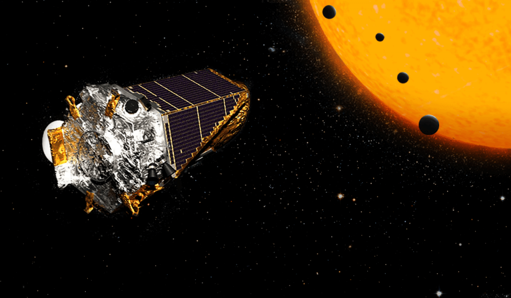

အခု ဆူပါနိုဗာ ပေါက်ကွဲမှုရဲ့ အစောဆုံး အချိန် အပိုင်းအခြားမှာ ဖြစ်ပျက်ခဲ့တာတွေကို ဘယ်တုန်းက မှနဲ့ မတူအောင် အသေးစိန် လေ့လာ မှတ်တမ်းတင် နိုင်ခဲ့ကြတာပါ။ ဒါဟာ ကြယ်တစ်စင်း အသက်သေဆုံး တဲ့အချိန် ကာလနဲ့ ပါတ်သက်လို့ သုတေသီ တွေအတွက် အလွန်ကို တန်ဖိုး မဖြတ်နိုင်တဲ့ အချက်အလက်တွေ ရရှိလိုက်တာပဲ ဖြစ်ပါတယ်။
ဒီ အချက်အလက် တွေကို မှတ်တမ်းတင် ပေးခဲ့တာကတော့ နာဆာက လွှတ်တင်ထားတဲ့ ကက်ပလာ အာကာသ မှန်ပြောင်းကြီး (Kepler space telescope) ကနေ မှတ်တမ်းယူခဲ့ တာပဲ ဖြစ်ပါတယ်။ ဒီ မှတ်တမ်းတင် အချက်အလက်တွေကို အခုမှ ဖမ်းယူရရှိတာတော့ မဟုတ်ပါဘူး။ ၂၀၁၇ ခုနှစ်အတဲက ဖမ်းယူ ရရှိခဲ့တာပါ။ အဲ့သည် အချိန်က ပေါက်ကွဲမှုကြောင့် ဖြစ်လာတဲ့ ရိုက်ခတ်လှိုင်း (Shock Wave) တွေ ကမ္ဘာကို ရောက်လာတဲ့ အချိန် ဖမ်းယူရရှိ ခဲ့တာပဲ ဖြစ်ပါတယ်။ ဒါပေမယ့် ဒီ အချက်အလက်တွေကို အသေးစိတ် ခွဲခြမ်းစိတ်ဖြာ နေခဲ့ရတာမို့ အခု ၂၀၂၁ ကျမှပဲ တွေ့ရှိချက်တွေကို ထုတ်ပြန်နိုင် ခဲ့တာ ဖြစ်ပါတယ်။
Monthly Notices of the Royal Astronomical Society ဂျာနယ်မှာ ဖေါ်ပြခဲ့တာ ဖြစ်ပါတယ်။ သုတေသီ တွေက အခုပေါက်ကွဲခဲ့တဲ့ ကြယ်ကြီးဟာ နေထက် အဆ ၁၀၀ လောက် ပိုကြီးတဲ့ အဝါရောင် ဧရာမ ကြယ် အမျိုးအစား (yellow supergiant) ဖြစ်တယ်လို့ ယူဆကြပါတယ်။
ဒီ သုတေသနကို ဦးဆောင်တဲ့ သူကတော့ ဩစတြေးလျ အမျိုးသား တက္ကသိုလ် (Australian National University) က PhD ကျမ်းပြုနေတဲ့ ပက်ထရစ် အမ်းစထရောင်း (Patrick Armstrong,) ပဲ ဖြစ်ပါတယ်။ သူက ပြောရာမှာ ဒီ့အရင်က ဆူပါနိုဗာ တစ်ခုရဲ့ အစောပိုင်းကာလတွေကို အသေးစိတ် လေ့လာမှုမျိုး မပြုလုပ် နိုင်ခဲ့ ပါဘူးလို့ ဆိုပါတယ်။
“ဒီကာလကို မှတ်တမ်းတင် လေ့လာနိုင်ဖို့ ဆိုတာက ဒီ ပေါက်ကွဲမှု ဖြစ်တဲ့ အချိန်ပိုင်းလေးမှာ ဖြစ်တဲ့ နေရာကို မှတ်တမ်းယူနေ နိုင်ဖို့ လိုပါတယ်။ နောက်ပြီး ယူတဲ့ မှတ်တမ်းကလဲ အသေးစိတ် မှတ်တမ်းမျိုး ဖြစ်ဖို့ လိုပါတယ်” လို့ ပြောပါတယ်။
အခု ပေါက်ကွဲတဲ့ ဆူပါနိုဗာကို SN2017jgh လို့ နာမည် ပေးထားပါတယ်။ ဒီ ပေါက်ကွဲသွားတဲ့ ကြယ်ကြီးဟာ ကမ္ဘာကနေဆို အလင်းနှစ် သန်း တစ်ထောင်လောက် ဝေးပါတယ်။ အခု မြင်ရတဲ့ ပေါက်ကွဲမှုက တကယ်တော့ လွန်ခဲ့တဲ့ နှစ် သန်း ၁,၀၀၀ က ဖြစ်ခဲ့တဲ့ ပေါက်ကွဲမှုပါ။ အတိတ်ကို ပြန်ကြည့်နေ မြင်နေ ရတာပေါ့ဗျာ။
ပုံမှန်ဆိုရင် နှစ် ၁၀၀ ကြာတိုင်း ဂလက်ဆီ ကြယ်စု တစ်ခုကို ကြယ်တစ်စင်းနှုန်းလောက် ပေါက်ကွဲလေ့ ရှိပါတယ်။ “အာကာသထဲမှာ ဂလက်ဆီပေါင်း သန်းပေါင်းများစွာ ရှိပါတယ်။ အတော်ကောင်းတဲ့ မှန်ပြောင်းနဲ့ဆို တစ်ပါတ်ကို ဆူပါနိုဗာ တစ်လုံးလောက် မြင်ရနိုင်ပါတယ်။ အရမ်းကောင်းတဲ့ ကက်ပလာ လို မှန်ပြောင်းကြီး မျိုးနဲ့ ဆိုရင်တော့ တစ်ရက်ကို ဆူပါနိုဗာ တစ်ခုနှုန်းလောက်တောင် မြင်ရနိုင်ပါတယ်” လို့ သူက ဆက်ပြောပါတယ်။
ဆူပါနိုဗာ ပေါက်ကွဲမှုက အလွန်မြန်ပါတယ်။ ဒါပေမယ့် ပေါက်ကွဲပြီး လင်းထိန်လာဖို့ ကြတော့ အချိန် သီတင်းပါတ် အနည်းငယ်ကနေပြီး လနဲ့ချီ ကြာမြင့်နိုင်ပါတယ်။ ပြီးရင်တော့ တဖြည်းဖြည်း အလင်းရောင် မှိန်သွားလေ့ ရှိပါတယ်။ ဒါပေမယ့် ဒီ ပေါက်ကွဲမှုရဲ့ အစောပိုင်း ကာလတွေကို မြင်နိုင်တာကတော့ ရက်အနည်းငယ်ပဲ ရှိပါတယ်။
အခု တွေ့ရှိမှုကို သိပ္ပံ ပညာရှင်တွေက “shock cooling light curve” လို့ခေါ်တဲ့ သဘာဝ ဖြစ်စဉ်ကို တွေ့ရှိပြီး ရှာဖွေတွေ့ရှိ ခဲ့တာ ဖြစ်ပါတယ်။ ဒီသဘော သဘာဝက အကြမ်းပြောရရင် ကြယ်ပေါက်ကွဲတဲ့ အခါ တဖြည်းဖြည်း အရောင် တောက်လာပါတယ်။ ပြီးရင်တော့ တဖြည်းဖြည်း ပြန်ပြီး အရောင် မှိန်သွားပါတယ်။
“ကျွန်တော်တို့ ကြည့်နေတုန်းမှာ ကောင်းကင်က အစက်သေးသေးလေး တစက်က တဖြည်းဖြည်း အလင်းရောင် တောက်လာပါတယ်။ ဒီဟာက ဆူပါနိုဗာ ပေါက်ကွဲမှု စနေပြီ ဆိုတာက ပြနေတာပါ။ နောက်ပြီးတော့မှ တဖြည်းဖြည်း ပြန်မှိန်သွားပါတယ်။ ဒီ “shock cooling light curve” ကို ဒါပထမဆုံး အသေးစိတ် အစအဆုံး တွေ့ရတာ ဖြစ်ပါတယ်” လို့ သူက ပြောပါတယ်။
ဒီ ဆူပါနိုဗာက ရောက်လာတဲ့အလင်းရောင်စဉ် တွေကို ခွဲခြမ်းစိတ်ဖြာ ကြည့်ပြီးတော့လဲ ဒီကြယ်ကြီးကို ဘာတွေနဲ့ ဖွဲ့စည်းထားလဲ ဆိုတာကို ခန့်မှန်းလို့ ရပါတယ်။
“မြင်တွေ့ရတဲ့ အလင်းရောင်ကို သက်တန့်ရောင်စဉ် တွေအဖြစ် ခွဲထုတ်လိုက်ပါတယ်။ ဒီလို ခွဲထုတ် လိုက်တဲ့ အခါ ဘာအရောင်တွေ တွေ့ရလဲ ဆိုတာကို ကြည့်တာပါ။ မြင်ရတဲ့ အရောင်တွေပေါ် မူတည်ပြီး ဒီကြယ်ကြီးကို ဖွဲစည်းထားတဲ့ ဒြပ်စင်တွေဟာ ဘာတွေလဲ ဆိုတာကို တွက်ဆလို့ ရပါတယ်။”

အခြား နက္ခတ်ကြည့် မှန်ပြောင်းကြီးတွေနဲ့ ကက်ပလာ မှန်ပြောင်းကြီးနဲ့ အဓိက ကွာသွားတာကတော့ ဓါတ်ပုံရိုက်တဲ့ အကြိမ်ရေပဲ ဖြစ်ပါတယ်။ အခြား မှန်ပြောင်း ကြီးတွေက အများအားဖြင့် တစ်ရက်ကို တစ်ကြိမ်ပဲ ရိုက်လေ့ရှိပါတယ်။ ကက်ပလာ ကတော့ နာရီဝက်ကို တစ်ပုံနှုန်း ရိုက်တာပါ။ ဒီတော့ အခု ပေါက်ကွဲမှုက အလင်းရောင် လင်းလာတာကနေ နောက်ဆုံး ပြန်မှိန်သွားတဲ့ အထိကို အသေးစိတ် မှတ်တမ်းယူနိုင်ခဲ့ခြင်း ဖြစ်ပါတယ်။
ဒီ မှတ်တမ်း ဓါတ်ပုံတွေ ရိုက်ခဲ့တဲ့ ကက်ပလာ အာကာသ မှန်ပြောင်းကြီးကတော့ ၂၀၁၈ ခုနှစ်မှာ လောင်ဆာဆီ ကုန်သွားလို့ အနားပေးလိုက်ပါပြီ။ လက်ရှိမှာတော့ ကက်ပလာ မှန်ပြောင်းကြီးဟာ ကမ္ဘာပါတ် လမ်းကြောင်းအတွင်းမှာပဲ လှည့်ပတ်ရင် အငြိမ်းစား ဘဝကို အထီးကျန်စွာ ဖြတ်သန်းလျက် ရှိကြောင်းပါ။
Reference: Champagne moment as supernova captured in detail for the first time